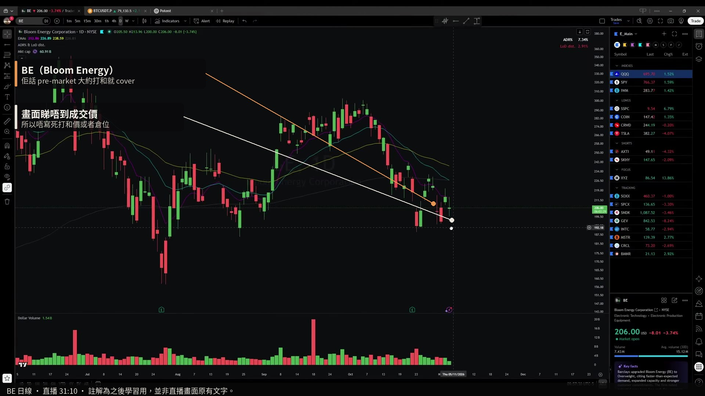
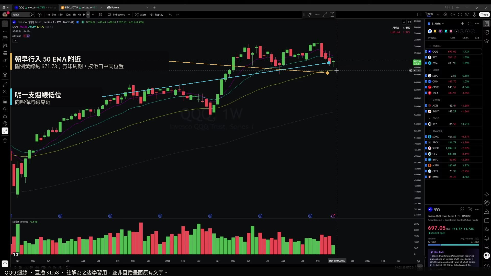
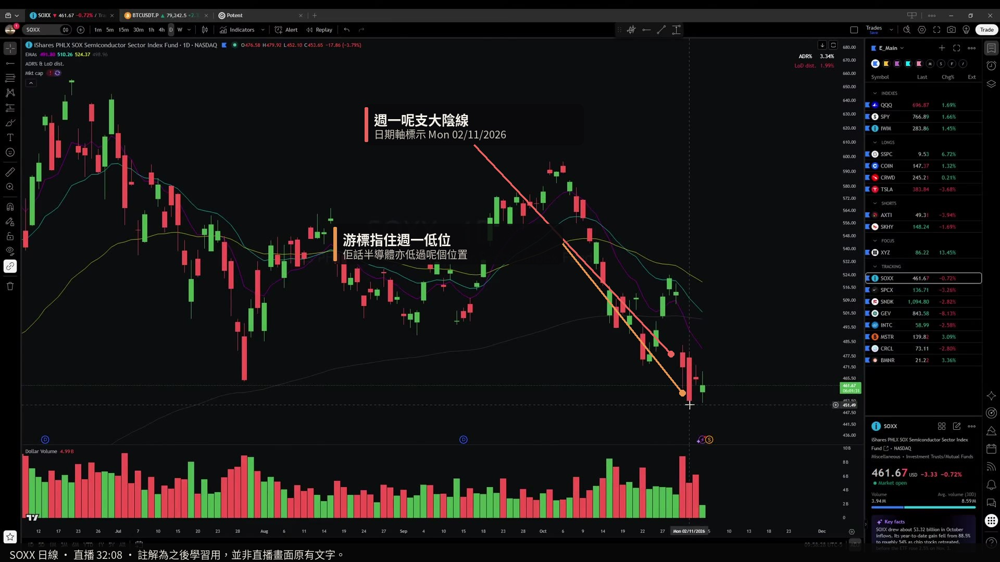
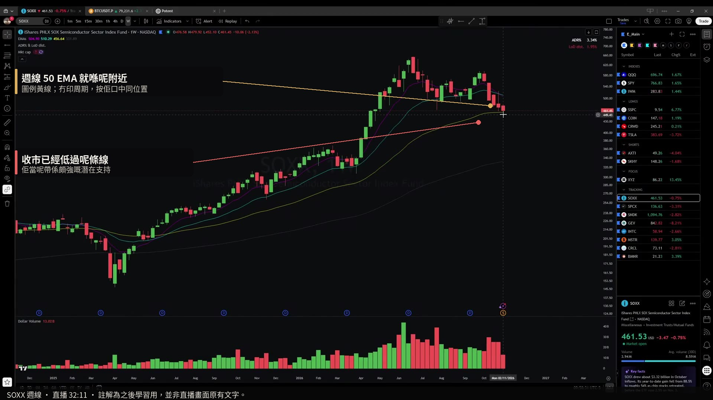

概要
今日低位本來可以多 cover 一啲
31:06 開始，佢回顧今日嘅 fade：市場由低位反彈之後，覺得自己至少應該喺今日低位／早段急跌入面 cover 多一啲淡倉。之後用 BE、QQQ 週線同 SOXX 日線／週線，解釋佢覺得嗰度已經係頗強嘅潛在支持，本應「向強勢賣出少少、向弱勢 cover 少少」。呢科係回顧同自我改進，唔係新開嘅淡倉教學。
圖一
BE 日線：pre-market 大約打和就 cover
直播 31:10

原話
Okay, and BE, I also covered it at the, I think at pre-market, I think around break even.
OK，BE 我都 cover 咗，我諗係 pre-market，大約打和附近。
點樣讀
畫面確認係 Bloom Energy（BE）日線。呢度只係一個佢講過嘅例子：大約打和就平咗。游標喺最近幾支 K 附近，但畫面冇成交票，所以唔寫死打和價或者倉位。
BE 唔單獨成科，只係呢段「今日低位本應多平一啲」嘅一個例子。
圖二
QQQ 週線：朝早行入 50 EMA 附近
直播 31:58

原話
As the market's starting to bounce from the lows. Actually, I think I should have covered some, at least some, into the lows of today's fade, like the earlier crash, earlier dip because of, I think, the election, and it's actually heading into the Qs at the 50 EMA at the morning,
市場開始由低位反彈。其實我覺得自己至少應該喺今日 fade 嘅低位 cover 一啲，即係早段嗰輪急跌／回調（佢覺得同選舉有關）。而朝早 Qs 其實係行入 50 EMA。
點樣讀
講緊「Qs at the 50 EMA in the morning」嗰陣，畫面已經係 QQQ 週線。圖例黃線約 671.73，冇印周期；註解只標「佢口中嘅 50 EMA 就喺呢附近」。呢支週線低位向呢條線靠近，但唔等於已經精確打中一個寫死嘅價位。
前半句係自我回顧：低位本應至少 cover 一啲，而唔係預測大市一定繼續彈。
圖三
SOXX 日線：游標指住週一低位
直播 32:08

原話
and the semis is also below Monday's candle low
半導體亦低過週一呢支 K 嘅低位。
點樣讀
日期軸標示嗰支高大陰線係 Mon 02/11/2026，游標亦指住呢支嘅低位。呢句要小心讀：週二、週三嘅實體其實略高過週一低位，並非最後收市已經清楚跌穿。本頁只記錄佢口中嘅讀法，同游標指住邊度，唔把「而家收市已經低過週一低位」寫死。
圖四
SOXX 週線：亦低過週線 50 EMA
直播 32:11

原話
so it's also below the weekly 50 EMA. I yeah I consider that is a pretty strong potential support. [I] should have like sell something to strength, like cover something to weakness, at least some. But that's, I think, yeah, I think I can, I should, I can improve next time.
所以亦低過週線 50 EMA。我覺得呢個係頗強嘅潛在支持。本應向強勢賣出少少，向弱勢 cover 少少，至少一啲。但係，我想下次可以改進。
點樣讀
切到週線之後，最後一支已經低過黃線一帶。圖例同樣冇印周期，只按佢口中「weekly 50 EMA」標位置。佢把呢帶讀成頗強嘅潛在支持，所以覺得今日低位本來可以多平一啲，而唔係叫人而家先至去追 cover。
「sell something to strength / cover something to weakness」係管理淡倉嘅回顧原則，本頁唔寫成新開倉或者已經執行嘅單。
附註
注意事項
- 圖上中文註解係之後加上嘅學習說明，唔係直播畫面原本已有嘅字。可用「原畫面」對返未加字嘅截圖。
- 畫面睇唔到成交價、倉位大細或者損益，所以本頁唔寫死呢啲數字。
- 圖例多數只有顏色同數值，冇印均線周期。本頁唔會把某條彩線寫死成某個周期；如果佢有講周期，只標「佢口中嘅位置就喺呢附近」。
- 原話來自機器轉寫（faster-whisper large-v3-turbo，並對照 YouTube 自動英文字幕），並非逐字人工校對。標點為閱讀而加。
- 32:15 之後有一段靜音翻圖（NQ、RTY、AXTI、SK Hynix 等），冇再講分析，唔算入呢科。
- 本頁只拆呢段淡倉回顧（約 31:06–32:37），冇混入其他系統或者規則。